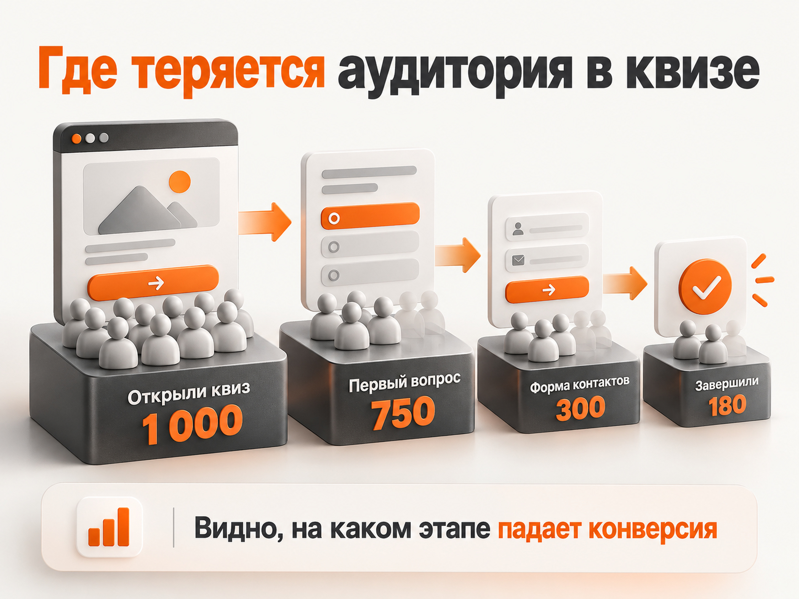

Блог о платном трафике
Цели Marquiz в Яндекс Метрике: идентификаторы, настройка и проверка
Для отслеживания квиза Marquiz (Марквиз) в Яндекс Метрике используются события marquiz-start, marquiz-stepN, marquiz-form и marquiz-finish. Они позволяют измерять запуск квиза, прохождение вопросов, переход к форме контактов и завершение квиза.
Часть целей создаётся автоматически после подключения Метрики. Дополнительные события можно настроить вручную через тип цели «Целевое событие».
Основные идентификаторы:
marquiz-start- посетитель открыл квиз.marquiz-step1- прошёл первый вопрос.marquiz-form- дошёл до формы контактов.marquiz-finish- завершил квиз по предусмотренному сценарию.
Для анализа заявок чаще всего используется marquiz-finish, однако важно проверить, что именно вызывает это событие в конкретном квизе.
Какие цели Marquiz создаются автоматически
Яндекс Метрика поддерживает автоматическое отслеживание четырёх событий Marquiz:
marquiz-start- открытие квиза.marquiz-result- показ результата квиза, если результаты подключены.marquiz-finish- завершение квиза с переходом к предусмотренному финальному действию.marquiz-payment-success- успешная оплата, если в квизе подключена оплата.
Чтобы автоматические цели работали, необходимо подключить счётчик Яндекс Метрики к квизу и включить автоматические цели в настройках счётчика.
После первого соответствующего события автоматическая цель появится в Метрике. Если цель с таким же условием уже существует, отдельная автоматическая цель не создаётся.
Важное отличие: события прохождения вопросов marquiz-step1, marquiz-step2 и перехода к форме marquiz-form не входят в стандартный список четырёх автоцелей Метрики. Их можно подключить дополнительно.
Основные идентификаторы целей Marquiz
Для отслеживания воронки квиза используются следующие события.
| Действие посетителя | Идентификатор цели |
|---|---|
| Открыл квиз | marquiz-start |
| Нажал кнопку стартовой страницы | marquiz-startquiz |
| Прошёл первый вопрос | marquiz-step1 |
| Прошёл второй вопрос | marquiz-step2 |
| Прошёл третий вопрос | marquiz-step3 |
| Дошёл до формы контактов | marquiz-form |
| Увидел результат квиза | marquiz-result |
| Завершил квиз | marquiz-finish |
| Успешно оплатил заказ | marquiz-payment-success |
Если в квизе больше трёх вопросов, идентификаторы продолжаются по тому же принципу: marquiz-step4, marquiz-step5 и далее.
Событие marquiz-stepN означает, что посетитель прошёл соответствующий вопрос, а не просто увидел его. Это важно при анализе отказов.
Дополнительные идентификаторы предусмотрены для двухшаговой формы контактов: marquiz-contacts1 и marquiz-contacts2. Они позволяют отслеживать заполнение первого и второго шагов.
Для большинства рекламных проектов я рекомендую сначала настроить запуск квиза, переход к форме контактов и завершение. Цели на отдельные вопросы стоит добавлять, когда необходимо подробно изучать потери пользователей.
Как подключить Яндекс Метрику к Marquiz
В Marquiz есть автоматическая и ручная настройка интеграции.
Автоматическое подключение
- Откройте редактор нужного квиза в Marquiz.
- Перейдите в раздел «Интеграции» и выберите Яндекс Метрику.
- Выберите автоматическую настройку и подключите аккаунт Яндекса.
- Укажите существующий счётчик Метрики или создайте новый.
- Отметьте события, которые хотите отслеживать. В настройках также предусмотрено подключение всех доступных целей.
- Нажмите «Опубликовать» в редакторе квиза.
После этого проверьте, поступают ли данные в выбранный счётчик.
Если Marquiz встроен на сайт, удобно использовать тот же счётчик, который собирает данные основного сайта. Так проще сопоставлять рекламный трафик и прохождение квиза. При ручной настройке не забудьте добавить прямой адрес квиза в дополнительные адреса счётчика.
Ручная настройка целей Marquiz в Метрике
Если интеграция уже работает и требуется создать отдельную цель, выполните следующие действия:
- Откройте нужный счётчик Яндекс Метрики.
- Перейдите в раздел «Цели».
- Нажмите «Добавить цель».
- Выберите тип «Целевое событие» (в прежнем интерфейсе - «JavaScript-событие»).
- Введите понятное название, например «Marquiz - форма контактов».
- Укажите условие «Совпадает» и идентификатор
marquiz-form. - Сохраните цель.
Аналогичным образом можно настроить marquiz-step1 и другие события.
Название цели может быть произвольным. Главное, чтобы идентификатор соответствовал событию, которое передаёт Marquiz.
Если необходимо объединить несколько событий с общим фрагментом идентификатора, используется условие «Содержит». Но для раздельного отслеживания этапов лучше указывать точное совпадение.
Отдельный вызов reachGoal в коде сайта не требуется, если событие уже передаётся штатной интеграцией Marquiz. Повторную отправку события на стороне сайта без необходимости настраивать не стоит.
Какая цель Marquiz отвечает за отправку заявки
Чаще всего основной целью для отслеживания заявок выбирают marquiz-finish.
Однако это событие нельзя во всех ситуациях автоматически приравнивать к новой заявке с контактными данными.
Его поведение зависит от структуры квиза:
- Одношаговая форма контактов. Событие срабатывает после отправки формы.
- Двухшаговая форма. Если включено создание заявки после первого шага,
marquiz-finishсработает уже после первого шага. В противном случае после второго. - Квиз без формы контактов. Событие может сработать при открытии страницы «Спасибо» или переходе по настроенному сценарию, даже если телефон или email не собирались.
Поэтому перед использованием marquiz-finish в Яндекс Директе я рекомендую отправить тестовую заявку и проверить её появление в Marquiz или CRM.
Событие marquiz-form фиксирует переход к форме контактов. Оно не подтверждает отправку заявки.
Зачем отслеживать прохождение вопросов квиза
Промежуточные события помогают понять, на каком этапе потенциальные клиенты прекращают прохождение квиза.
Допустим, за определённый период получены следующие результаты:
| Этап | Пользователи |
|---|---|
| Открыли квиз | 1000 |
| Прошли первый вопрос | 750 |
| Дошли до формы контактов | 300 |
| Завершили квиз | 180 |
Цифры условные, для примера.
В этом случае до формы контактов дошли 30% пользователей, открывших квиз. Из посетителей, дошедших до формы, завершили квиз 60%.

Что можно проверить:
- Большая потеря в начале квиза: привлекательность первого экрана, понятность предложения, необходимость нажимать дополнительную кнопку.
- Потери между вопросами: сложность формулировок, количество шагов, удобство ответов на мобильных устройствах.
- Потери на форме контактов: количество обязательных полей, условия обработки данных, удобство отправки.
Важный момент: достижение промежуточной цели само по себе не доказывает причину отказов. Чтобы подтвердить гипотезу, необходимо дополнительно изучить поведение пользователей и протестировать изменения.
Какие цели Marquiz использовать в Яндекс Директе
Для рекламных кампаний я разделяю цели на основные и вспомогательные.
Основная конверсия - подтверждённая отправка заявки. В типовом квизе ей обычно соответствует marquiz-finish, если это подтверждено тестированием.
Вспомогательные цели - marquiz-start, marquiz-stepN и marquiz-form. Они позволяют анализировать вовлечённость и находить слабые места воронки.
Не рекомендую без необходимости включать все промежуточные этапы в оптимизацию рекламной кампании. Большое количество открытий квиза ещё не означает, что реклама привлекает потенциальных покупателей.
Если заявок мало, промежуточные события помогают анализировать воронку. Но считать их равноценной заменой отправленной заявки неправильно.
Для оценки результата рекламы дополнительно необходимо сопоставлять цели Метрики с фактическими заявками и продажами.
Как проверить, работают ли цели Marquiz в Метрике
После настройки интеграции не ограничивайтесь проверкой списка целей. Необходимо убедиться, что события действительно поступают в Метрику.
Для этого используйте встроенную отладку Яндекс Метрики.
- Откройте страницу с квизом, добавив к адресу параметр
?_ym_debug=2. Если URL уже содержит параметры, добавьте&_ym_debug=2. - Запустите квиз и пройдите несколько вопросов.
- Откройте появившуюся панель отладки Метрики.
- Проверьте номер счётчика в разделе Counters.
- Найдите события
marquiz-start,marquiz-step1,marquiz-formиmarquiz-finishв Events по мере прохождения квиза. - Убедитесь, что после отправки тестовой заявки появилось финальное событие.
Если панель отладки не открывается, можно воспользоваться консолью браузера с параметром _ym_debug=1.
После проверки откройте в Метрике отчёт «Конверсии». Данные о достигнутых целях обычно появляются не мгновенно, а через несколько минут.
Подробнее о проверке событий: Как проверить цель в Яндекс Метрике.
Почему цели Marquiz не срабатывают в Яндекс Метрике
Если события Marquiz отсутствуют в Метрике, сначала определите, на каком этапе происходит ошибка: квиз не передаёт событие или Метрика не учитывает его как цель.
| Проблема | Что проверить |
|---|---|
| Не фиксируется ни одно событие | Подключён ли счётчик к квизу, правильный ли его номер, опубликованы ли изменения |
| В Метрике есть визиты, но нет целей | Включены ли автоцели, настроены ли нужные дополнительные события |
Не срабатывает marquiz-stepN | Правильно ли указан номер вопроса и проходит ли посетитель этот вопрос |
Есть marquiz-form, но нет marquiz-finish | Отправлена ли форма, как устроен финальный сценарий квиза |
| Не срабатывает составная цель | Правильно ли указана последовательность шагов, выполняются ли все условия |
| События видны в отладчике, но нет конверсий | Совпадает ли идентификатор с условием цели, верно ли выбран счётчик |
| События есть не у всех пользователей | Не блокируют ли Метрику расширения браузера, фильтры или другие скрипты |
Рассмотрим наиболее распространённые причины подробнее.
1. Счётчик не подключён к самому квизу
Установка Яндекс Метрики на основной сайт ещё не гарантирует отслеживание событий встроенного Marquiz.
Проверьте настройки интеграции внутри редактора квиза. Номер счётчика должен совпадать с тем, в котором вы ожидаете увидеть цели.
Если используется счётчик основного сайта, добавьте прямую ссылку на квиз в дополнительные адреса счётчика Метрики.
2. После подключения интеграции квиз не опубликован
Изменения настроек интеграции необходимо опубликовать.
Откройте редактор Marquiz, проверьте параметры Яндекс Метрики и нажмите «Опубликовать». Затем повторно проверьте события в браузере.
Это одна из первых проверок, которую стоит выполнить, прежде чем искать ошибки в коде.
3. Неправильно указан идентификатор цели
Идентификаторы чувствительны к точности записи.
Например, marquiz-form и marquiz-finish обозначают разные действия. Если в Метрике указана одна цель, а квиз передаёт другое событие, конверсия не будет зафиксирована по нужной цели.
Проверьте переданный идентификатор в отладчике и сравните его с условием цели в настройках счётчика.
4. Не работает составная цель
Составная цель учитывает прохождение заданных этапов в установленной последовательности.
Если один из обязательных шагов не выполнен, вся цепочка не будет считаться завершённой.
Например, не стоит добавлять marquiz-contacts1 в составную цель для квиза с одношаговой формой контактов. Это событие предназначено для двухшаговой формы.
Проверьте каждое событие отдельно, прежде чем объединять их в составную цель.
5. Метрика заблокирована браузером
На работу аналитики могут влиять блокировщики рекламы, настройки приватности, сетевые ограничения и ошибки загрузки скриптов.
Проверьте квиз в браузере без блокирующих расширений. Если в отладчике нет событий, сначала убедитесь, что загружается сам счётчик.
Также обратите внимание на фильтр «Не учитывать мои визиты». Для тестирования используйте режим инкогнито, если такой фильтр включён.
6. Счётчик показывает статус «Не найден»
Этот статус не всегда означает, что интеграция сломана.
В документации Marquiz указано, что иногда счётчик отображается как не найденный из-за особенностей интеграции.
Главный критерий проверки - фактическое поступление посещений и событий. Если данные приходят, один только статус «Не найден» не является достаточным основанием для переустановки счётчика.
Как настроить цели для нескольких квизов Marquiz
Если на одном сайте установлено несколько квизов, одинаковые идентификаторы могут объединять статистику по разным квизам.
Чтобы разделять их, в настройках интеграции Marquiz предусмотрена функция «Уникальные цели».
После её включения к идентификатору события добавляется ID конкретного квиза.
Например:
marquiz-start_5e5cd4bf4ab314004410b2e2
Это позволяет отдельно анализировать запуски и заявки каждого квиза.
При настройке такой цели проверяйте полный идентификатор события через отладчик. Если требуется отслеживать только один квиз, используйте условие точного совпадения идентификатора.
Частые вопросы
Нужно ли вручную создавать все цели Marquiz?
Нет. Четыре основных события поддерживаются автоматическими целями Метрики. Для прохождения вопросов, показа формы контактов и других дополнительных действий можно подключить отдельные цели.
Почему цель marquiz-form срабатывает, а заявок нет?
Потому что marquiz-form фиксирует достижение формы контактов, а не успешную отправку заявки. Посетитель может открыть форму и закрыть квиз, ничего не отправив.
Можно ли отслеживать отправку контактов по этапам?
Да. Для двухшаговой формы предусмотрены события marquiz-contacts1 и marquiz-contacts2. В одношаговой форме они не нужны.
Что делать, если marquiz-finish срабатывает, а заявки в CRM нет?
Сначала проверьте, появилась ли заявка в самом Marquiz. Затем проверьте настройки отправки контактов и интеграцию с CRM. Также убедитесь, что событие marquiz-finish в вашем сценарии действительно означает отправку контактных данных.
Итог
Для настройки целей Marquiz в Яндекс Метрике необходимо подключить счётчик к квизу, выбрать события для отслеживания и проверить их срабатывание через _ym_debug=2.
Основную информацию о заявках обычно даёт marquiz-finish. Промежуточные события позволяют анализировать прохождение квиза и находить этапы с высокой потерей пользователей.
При использовании целей в Яндекс Директе важно проверять не только количество конверсий в Метрике, но и фактическое получение заявок. Это помогает оптимизировать рекламу на реальные обращения, а не только на действия внутри квиза.
Официальная документация: